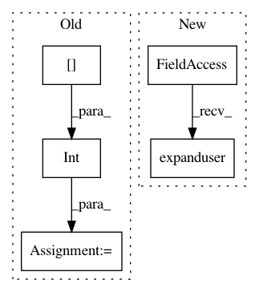

def34313b8bb436397c5b7a76504a8f830fb07a8,scripts/bert/compare_tf_gluon_model.py,,,#,32
Before Change
tensorflow_all_out = []
for result in estimator.predict(input_fn, yield_single_examples=True):
unique_id = int(result["unique_id"])
feature = unique_id_to_feature[unique_id]
output_json = collections.OrderedDict()
output_json["linex_index"] = unique_id
tensorflow_all_out_features = []
After Change
args = parser.parse_args()
input_file = os.path.expanduser(args.input_file)
tf_bert_repo_dir = os.path.expanduser(args.tf_bert_repo_dir)
tf_model_dir = os.path.expanduser(args.tf_model_dir)
vocab_file = tf_model_dir + "vocab.txt"
bert_config_file = tf_model_dir + "bert_config.json"
init_checkpoint = tf_model_dir + "bert_model.ckpt"
In pattern: SUPERPATTERN
Frequency: 3
Non-data size: 5
Instances
Project Name: dmlc/gluon-nlp
Commit Name: def34313b8bb436397c5b7a76504a8f830fb07a8
Time: 2019-03-02
Author: linhaibin.eric@gmail.com
File Name: scripts/bert/compare_tf_gluon_model.py
Class Name:
Method Name:
Project Name: vatlab/SoS
Commit Name: 394541392806a620ab8b6bfb606e5bad7cac936c
Time: 2017-01-06
Author: ben.bog@gmail.com
File Name: sos/__main__.py
Class Name:
Method Name: cmd_unpack
Project Name: vatlab/SoS
Commit Name: affcf8e59f6942e93cee19aa19637ba7f0da20b1
Time: 2017-01-06
Author: ben.bog@gmail.com
File Name: sos/__main__.py
Class Name:
Method Name: cmd_unpack